Zhang et al., Genome Research (paper in 2339.pdf)
Pacing: 30 minutes total
Q&A: optional 5 minutes after Slide 13
Sunbear learns a cell identity representation that is disentangled from time/condition, then recombines factors to predict missing single-cell profiles across time, sex, and modality.
Core challenge: single-cell assays are destructive, so true longitudinal trajectories per cell are unobservable.
Core strategy: factorized cVAE + sinusoidal time encoding + multimodal alignment constraints.
If I hold cell identity fixed, what would this cell look like at another time point, in another sex, and/or in another modality?
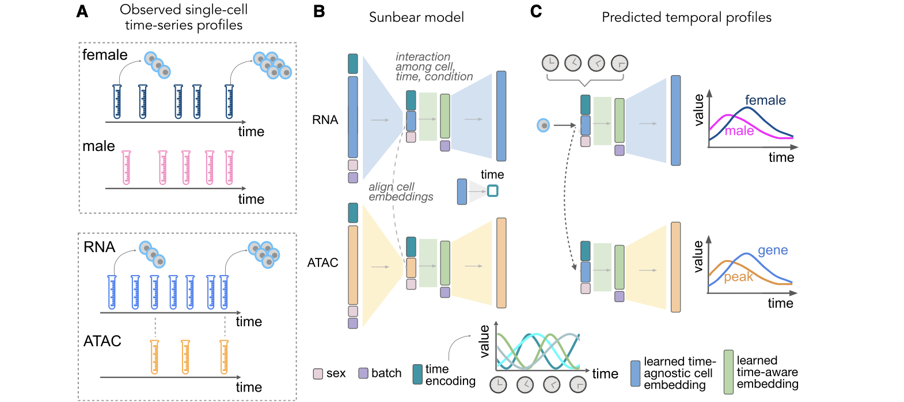
Source: Zhang et al. Figure 1 (used from paper). Panel A: input missingness pattern. Panel B: factorized model. Panel C: inference mode.
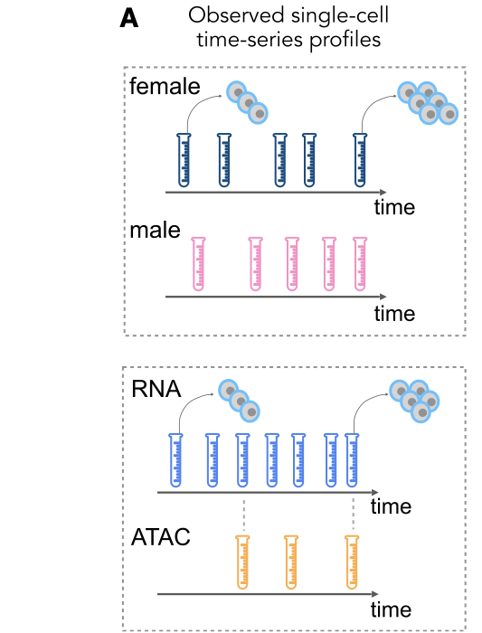
Training data have structured holes: unmatched sex-time blocks and uneven RNA/ATAC time coverage.
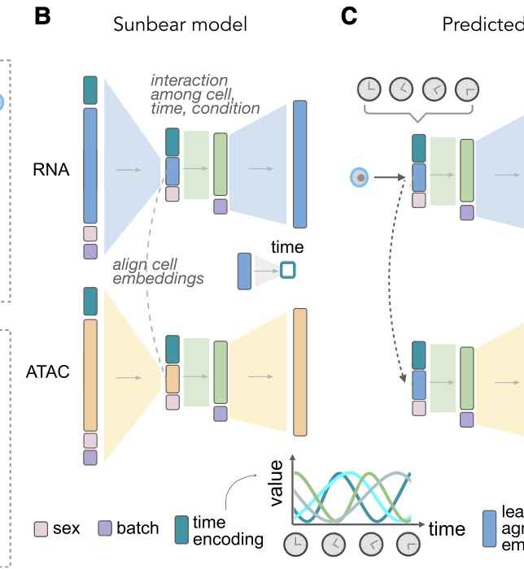
Cell identity is separated from time/condition/batch; shared temporal interaction links RNA and ATAC.
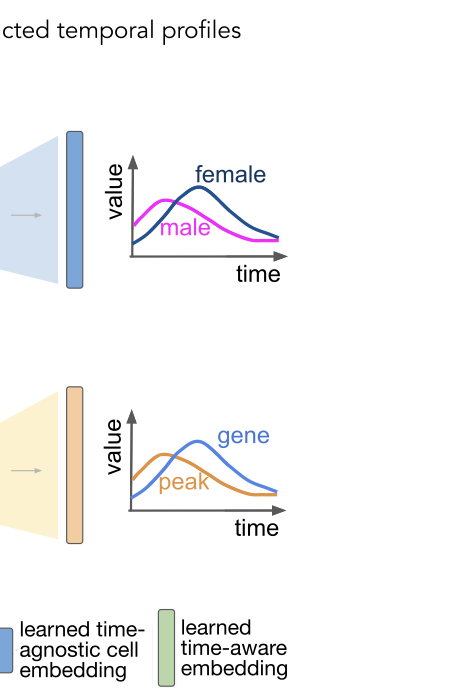
Fix identity, change time/condition/modality factor to generate missing profiles.
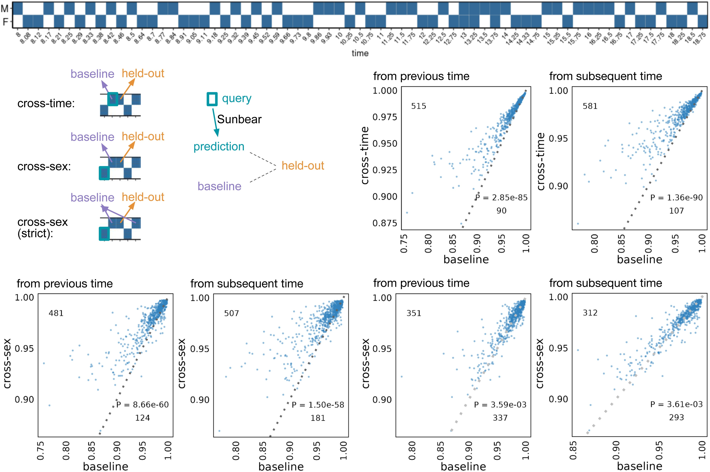
Source: Zhang et al. Figure 2. Dots above diagonal indicate Sunbear outperforms baseline nearest-time estimates.
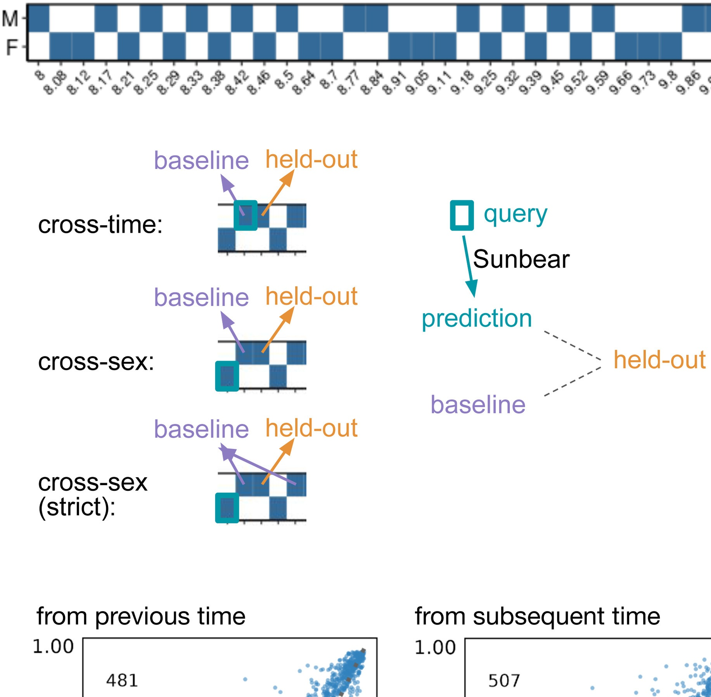
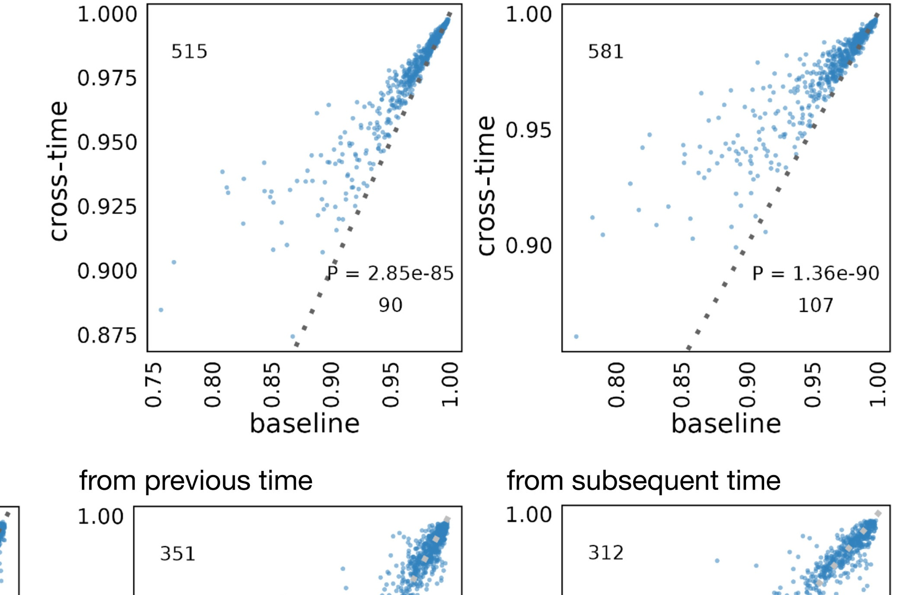
Sunbear is not only smoothing toward nearest measured time; it learns transferable temporal structure conditioned on latent identity.
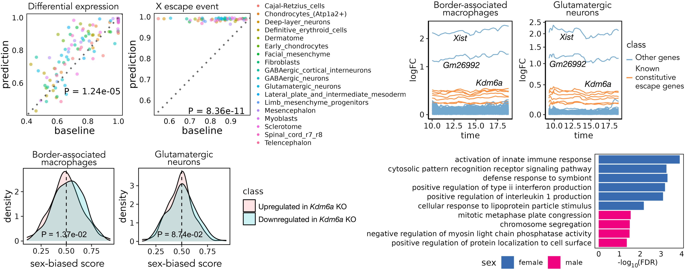
Source: Zhang et al. Figure 3. Validation (A-B), time trajectories (C-D), external biology checks (E-F).
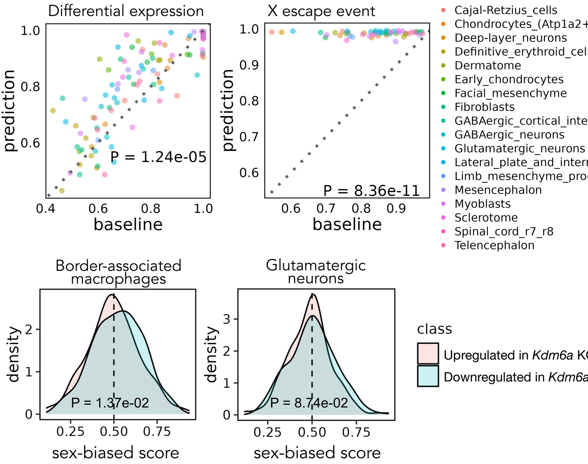
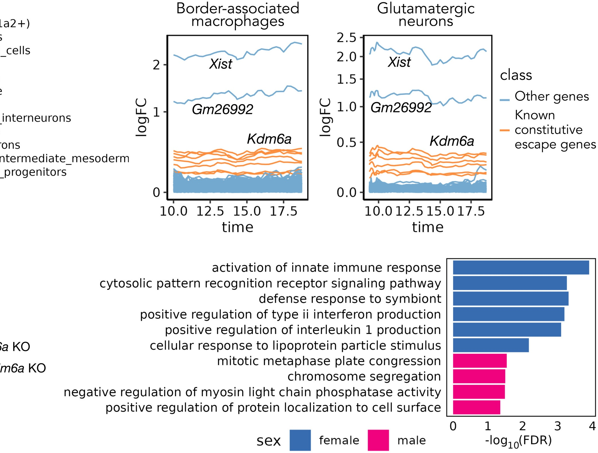
Interpretive caution: these are predicted dynamic differences anchored by available snapshots, not direct same-cell longitudinal measurements.
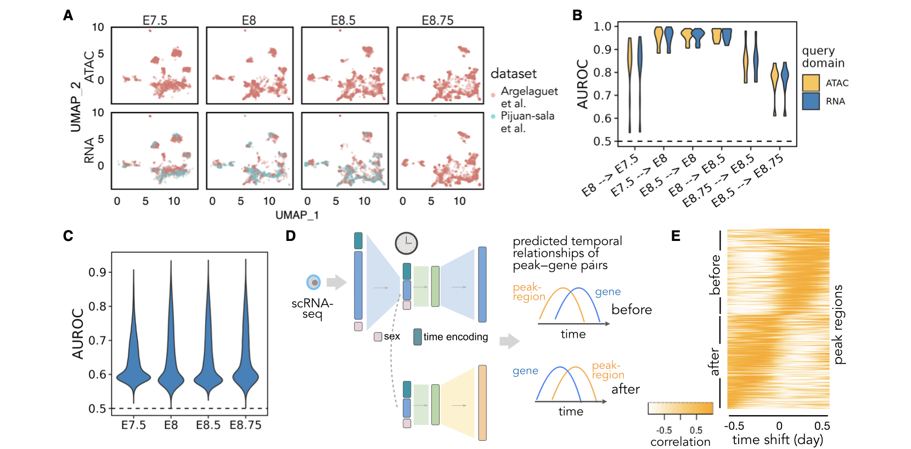
Source: Zhang et al. Figure 4. Cross-modality temporal prediction and lag-structure analysis (TLCC).
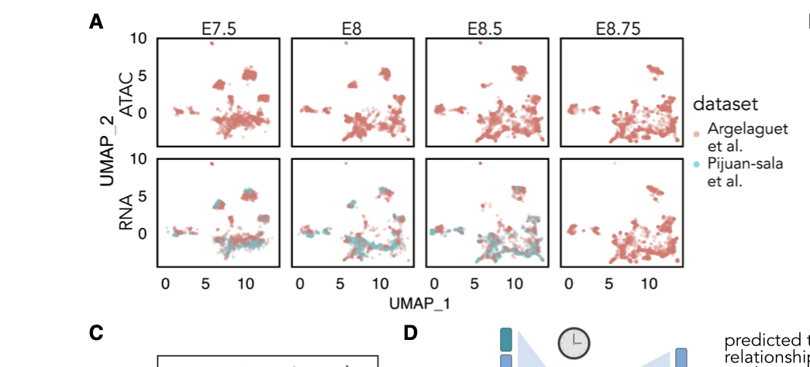
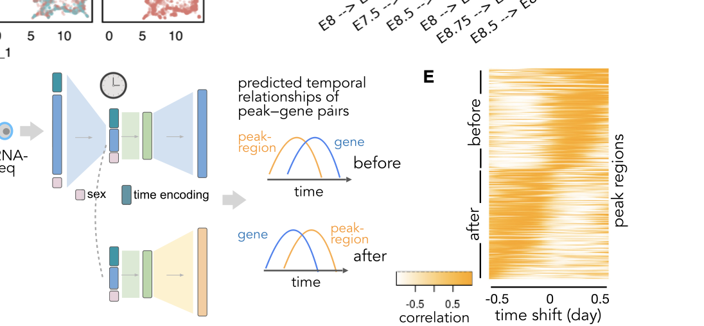
Chromatin priming is common but not uniform; dynamic regulation appears distributed over diverse lag times.
Best framing: Sunbear is a high-quality hypothesis generator and integrative inference engine, not a direct causal proof system.
Sunbear shows that with careful latent factorization, we can convert disconnected snapshot datasets into coherent, testable temporal stories of cell state regulation.
"I’m happy to discuss baselines, uncertainty, and where this method should be validated next experimentally."
Use this slide only if someone asks for objective-level details during Q&A.